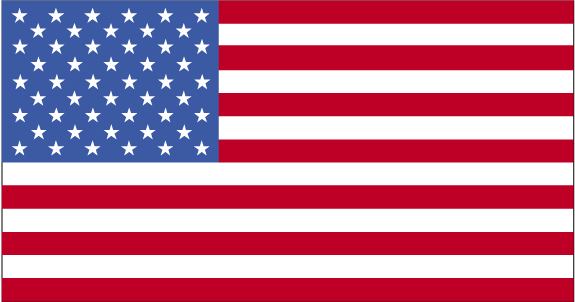
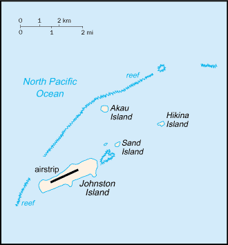
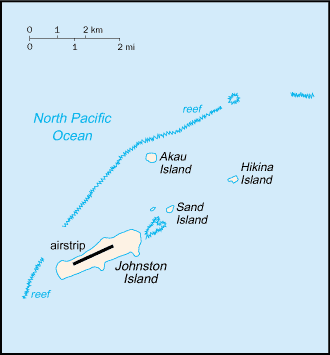
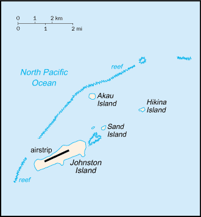

 


Australia-Oceania :: JOHNSTON ATOLL
Introduction :: JOHNSTON ATOLL
-
Both the US and the Kingdom of Hawaii annexed Johnston Atoll in 1858, but it was the US that mined the guano deposits until the late 1880s. Johnston Island and Sand Island were designated wildlife refuges in 1926. The US Navy took over the atoll in 1934, and subsequently the US Air Force assumed control in 1948. The site was used for high-altitude nuclear tests in the 1950s and 1960s, and until late in 2000 the atoll was maintained as a storage and disposal site for chemical weapons. Cleanup and closure of the weapons facility ended in May 2005.
Geography :: JOHNSTON ATOLL
-
Oceania, atoll in the North Pacific Ocean 1328 km southwest of Honolulu, Hawaii, about one-third of the way from Hawaii to the Marshall Islands16 45 N, 169 31 WOceaniatotal: 2.63 sq kmland: 2.63 sq kmwater: 0 sq kmabout 4.7 times the size of The Mall in Washington, DC0 km34 kmterritorial sea: 12 nmexclusive economic zone: 200 nmtropical, but generally dry; consistent northeast trade winds with little seasonal temperature variationmostly flatguano deposits (worked until about 1890), terrestrial and aquatic wildlifeoccasional tropical cyclones; coral reef to the north and west of the atoll is a maritime hazardno natural fresh water resourcesstrategic location in the North Pacific Ocean; Johnston Island and Sand Island are natural islands, which have been expanded by coral dredging; North Island (Akau) and East Island (Hikina) are manmade islands formed from coral dredging; the egg-shaped reef is 34 km in circumference; closed to the public; a former US nuclear weapons test site; site of now-closed Johnston Atoll Chemical Agent Disposal System (JACADS); most facilities dismantled and cleanup complete in 2004; some low-growing vegetation
People and Society :: JOHNSTON ATOLL
-
uninhabitednote: in previous years, there was an average of 1,100 US military and civilian contractor personnel present; as of September 2001, population had decreased significantly when US Army Chemical Activity Pacific (USACAP) departed; as of May 2005 all US Government personnel had left the island
Government :: JOHNSTON ATOLL
-
conventional long form: noneconventional short form: Johnston Atolletymology: although first encountered in 1796, the islands were named after Captain Charles JOHNSTON, who sighted them in 1807unincorporated territory of the US; administered from Honolulu, Hawaii, by Pacific Air Forces, Hickam Air Force Base, and the Fish and Wildlife Service of the US Department of the Interior as part of the National Wildlife Refuge Systemthe laws of the US, where applicable, applythe flag of the US is used
Transportation :: JOHNSTON ATOLL
-
total: 12,438 to 3,047 m: 1 (2013)Johnston Island
Military and Security :: JOHNSTON ATOLL
-
defense is the responsibility of the US
Transnational Issues :: JOHNSTON ATOLL
-
none